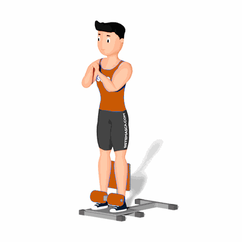

Agachamento Sissy

O exercício tem como principal foco a produção de massa muscular, focando na parte frontal da coxa, não deixa de trabalhar os demais músculos envolvidos no movimento, como panturrilha e glúteos. É excelente para quem precisa de resultados concretos e maior estabilidade para o corpo.
Ficha Técnica
Tipo: Musculação
Grupo Muscular: Perna
Aparelho: Nenhum
Músculos: Nenhum
Como realizar
- Primeiro, fique em pé no aparelho. Seus pés devem estar paralelos, alinhados com os joelhos e quadril;
- Encoste no encosto mais alto de forma que o topo fique na linha onde os joelhos dobram e prenda as almofadas mais baixas de forma a segurar o tornozelo;
- Uma vez na posição inicial inicie o movimento dobrando as pernas para se sentar. Mantenha a coluna alinhada e o abdômen contraído;
- Desça em um movimento controlado até que os joelhos se dobrem formando um ângulo de 90º;
- Pra finalizar, retorne à posição inicial, subindo de maneira controlada até estar completamente ereto novamente e repita os movimentos.
 RC STORE
RC STORE